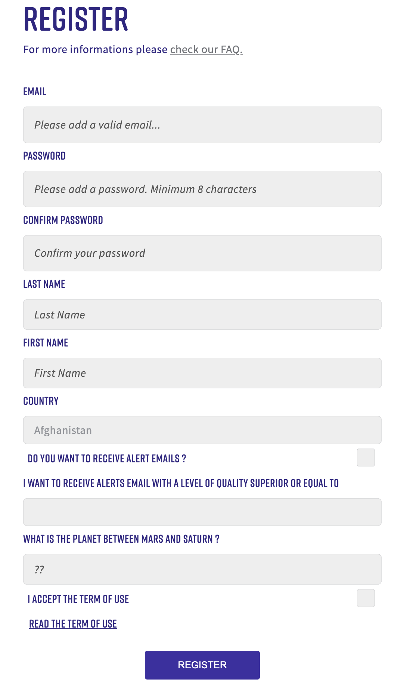
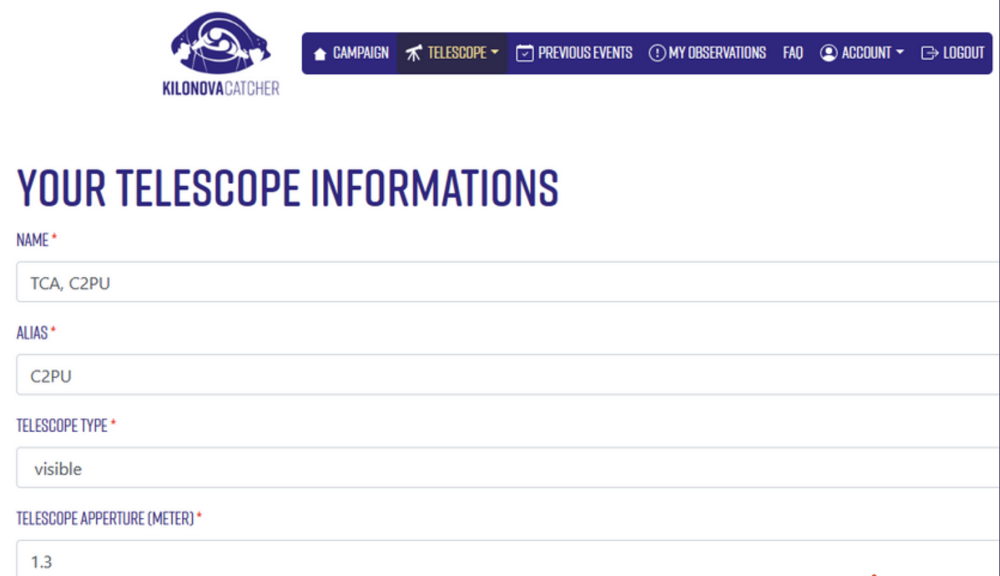
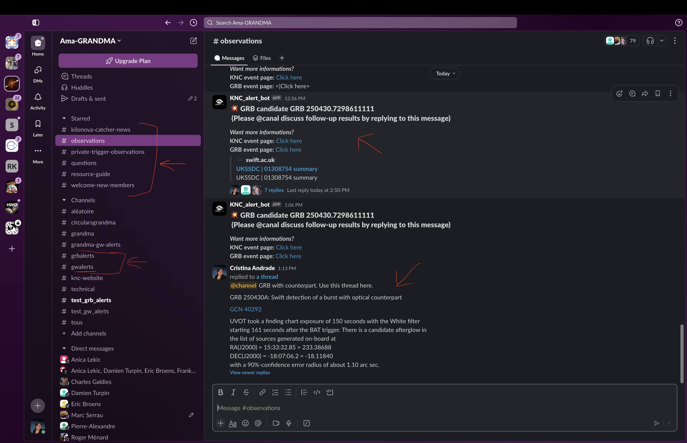
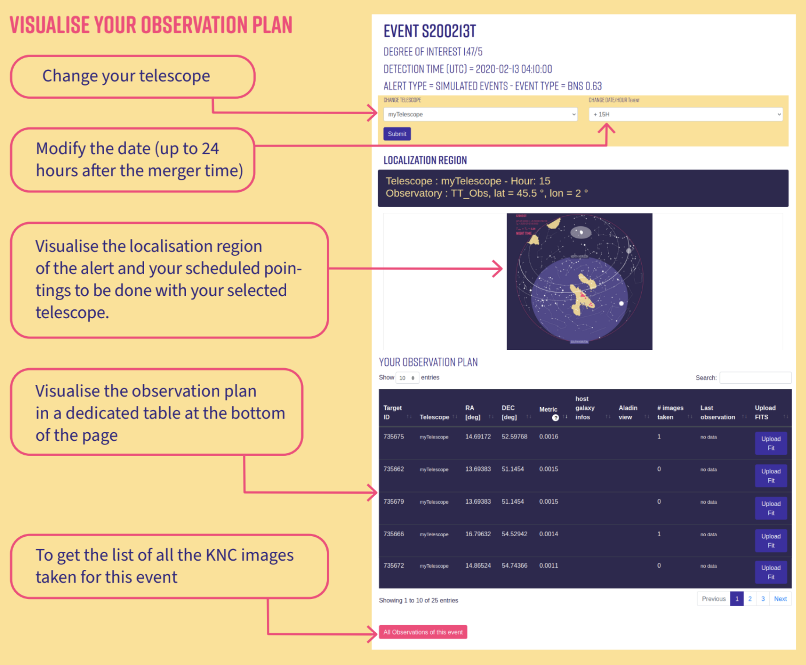
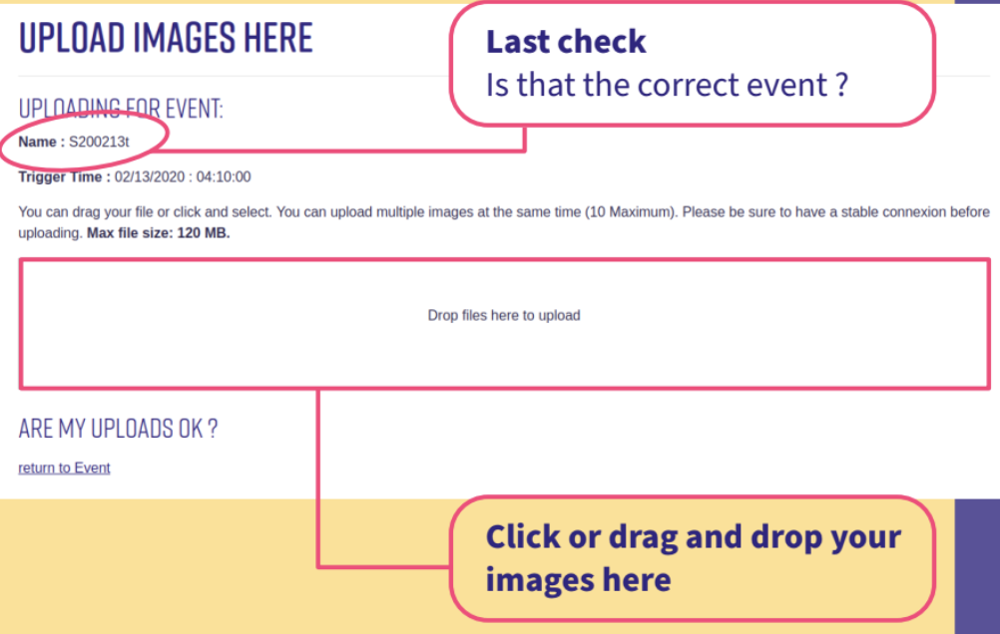

KNC Protocol: How to Participate in Observations#
This guide outlines how to register with Kilonova Catcher (KNC), connect your telescope, receive alerts, and respond effectively to gravitational wave (GW) or gamma-ray burst (GRB) events. It also explains how we interact with the professional GRANDMA collaboration, where to find resources, and what is expected during real-time follow-up campaigns.
1. How to Register#
Visit kilonovacatcher.in2p3.fr
Click “Join” and create your user account
Verify your email address
Log in to access your dashboard

2. Add Your Telescope#
Navigate to the “Telescope” tab
Click “Add telescope” and enter:
Your telescope’s location
Aperture
Field of view
Once registered, it will appear under “List of my telescopes.”
Make sure all values are accurate — they determine your observation plans. 
3. How KNC Sends Alerts#
Our alerts are based on gravitational wave (LIGO/Virgo/KAGRA) and GRB satellite triggers. Alerts are decoded and filtered by ICARE, GRANDMA’s custom software, and distributed via:
Email
Your dashboard at kilonovacatcher.in2p3.fr
Slack:
#private-trigger-observations: for event notifications and observing plans#observations: for coordinating active follow-up and sharing coverageKNC_alert_bot forwards a condensed version of the alerts from
#grbalertsto the#observationschannel.
#grbalerts- KNC_alert_bot for Gamma-Ray Bursts (GRBs)#gwalerts- KNC_alert_bot for Gravitational Waves (GWs) - IN DEVELOPMENTScientists
We will provide information of the event directly in
#observations.
Please make sure to also join
#kilonova-catcher-news!
4. Connecting to Slack#
If you’re not already in the Slack workspace, contact the KNC leadership (grandma.knc@gmail.com) to receive an invite.
5. What Happens During an Alert#
You’ll receive an alert via Slack/email
Log in at kilonovacatcher.in2p3.fr
Go to the alert page and download your personalized observation plan
Plans include:
A list of galaxy fields (RA/Dec)
Filter recommendations
Expected brightness (e.g., for a kilonova similar to AT2017gfo)
A skymap with your pointings

6. What Is Expected of You#
Use both blue and red filters (e.g., B & Rc or u & i)
Integrate long enough to reach expected magnitude (typically 300s)
Apply dark, bias, and preferably flat corrections
Solve astrometry (use nova.astrometry.net)
Upload FITS images via your dashboard
FITS File Requirements#
Header must include:
RA, Dec
Start/End time
Filter name
No special characters in filenames: avoid
+,-,*,@, etc. Please see Preparing Raw Data for the full naming convention expectation.
KNC and GRANDMA scientists will verify your images. Proper formatting ensures your data can be used.

7. Revisiting Fields and Coordination#
Return to promising fields a few hours later
Check
#observationsfor requests from GRANDMA scientistsReport your coverage so others can complement your work
Ask questions or get support from other observers
8. How We Interact With GRANDMA#
KNC is the citizen science arm of GRANDMA, a professional telescope network coordinating global transient follow-up.
ICARE generates plans for all telescopes (professional + citizen)
KNC participants receive the same alert content and observing regions
Your data may contribute to joint publications or discovery announcements
9. Supporting Documents#
Kilonova Catcher Guidebook (PDF)#
Summary:
This guide introduces multi-messenger astronomy and explains how kilonovae are detected, why they matter, and how citizen scientists can contribute. It outlines the history of gravitational wave detection, current observatories, and how to join the project, register a telescope, and submit calibrated images. It also describes how KNC fits into the GRANDMA network.
Astronomer’s Guide (PDF)#
Summary:
This detailed brochure provides a visual walk-through of a neutron star merger, from gravitational wave emission to kilonova light curve evolution. It explains the observation strategy, what filters to use, how to prioritize targets, and how to ensure your FITS files meet GRANDMA’s standards. It is an essential reference for follow-up campaigns during O4.
10. Quick Checklist#
Register your telescope
Join
#private-trigger-observationsand#observationson SlackMonitor alerts and download plans
Observe using blue/red filters
Calibrate and upload your FITS files
Coordinate revisits with the team
Follow updates from GRANDMA
11. Contact Us#
KNC Team - grandma.knc@gmail.com
Damien Turpin — damien.turpin@cea.fr
Cristina Andrade - andra104@umn.edu
Sarah Antier-Farfar — sarah.antier@oca.eu